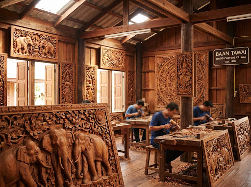
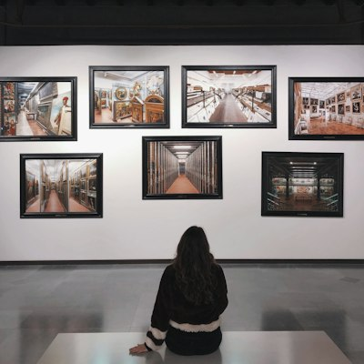
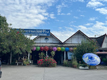
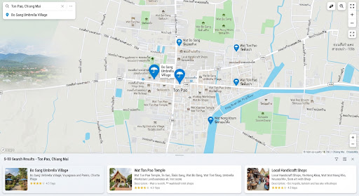

พบ 24 รายการใน ต้นเปา (แสดง 4 รายการ)
palette หัตถกรรม • 1.2 กม.

palette หัตถกรรม • 3.0 กม.

palette หัตถกรรม • 1.8 กม.

palette หัตถกรรม • 1.5 กม.

พิกัดปัจจุบัน
ต้นเปา, สันกำแพง, เชียงใหม่
18.760, 99.074